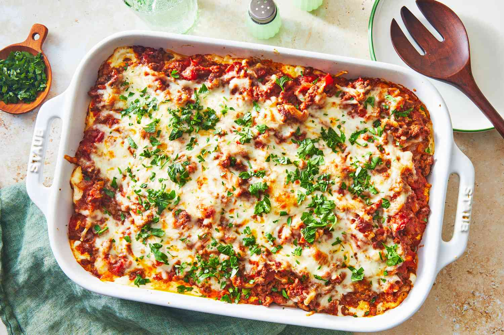

Million Dollar Spaghetti

This million dollar spaghetti recipe features a beefy, creamy tomato sauce
that’s impossible to resist.
This dish is a spaghetti casserole with layers of noodles, cheese, and
homemade meat sauce. It's unbelievably good! Serve with garlic bread and
salad.
It’s budget friendly, easy to make, and a meal the whole family will
love.
Ingredients:
These are the ingredients you'll need to make this Million Dollar
Spaghetti recipe:
- 1 (8 ounce) package spaghetti;
- 1 pound lean ground beef;
- 1 (16 ounce) jar spaghetti sauce;
- ½ cup butter, sliced-divided;
- 1 (8 ounce) container cottage cheese;
- 1 (8 ounce) package cream cheese, softened;
- ¼ cup sour cream;
-
1 (8 ounce) package shredded sharp Cheddar cheese.
Steps for the recipe:
- Preheat the oven to 175 degrees C.
-
Bring a large pot of lightly salted water to a boil. Cook spaghetti in
boiling water until cooked through but firm to the bite, about 8 to 12
minutes. Drain,
-
While the pasta is cooking, heat a large skillet over medium-high
heat. Cook and stir beef in the hot skillet until browned and crumbly,
5 to 7 minutes; drain and discard grease. Transfer to a bowl and mix
in spaghetti sauce.
-
Place 1/2 of the butter slices into the bottom of a 9x13-inch
casserole dish. Spread 1/2 of the spaghetti into the dish.
-
Mix cottage cheese, cream cheese, and sour cream together in a bowl;
spread mixture over spaghetti. Cover with remaining spaghetti and top
with remaining slices of butter.
-
Pour ground beef mixture over spaghetti and spread in an even layer.
-
Bake in the preheated oven for 30 minutes. Spread Cheddar cheese on
top and continue baking until cheese has melted and is lightly
browned, about 15 minutes more.